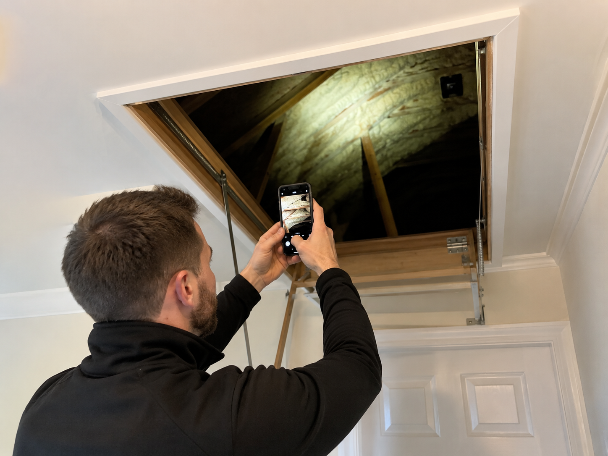

Free Remote Photo Review
Start with safe photographs and background information before any chargeable on-site assessment is considered.
Take photographs only where it is safe
Useful photos often show the loft access, general roof area, foam close-ups, ventilation routes and any paperwork you already have.
Do not walk across uncovered joists, enter an unsafe loft, disturb foam, remove materials, work at height without safe access or take risks purely to obtain photographs.
If safe photographs are not possible, explain that when you call or email.

What to send
Include safe photographs, the reason for concern, property age if known, installation paperwork and any exact surveyor or lender wording.
What the review can do
It can help identify whether more information, a chargeable on-site assessment or another specialist route is sensible.
What it is not
The remote photo review is not a survey, valuation, structural assessment or lender decision.
How to start
Complete the visible form below to prepare the information needed for the free remote photo review. Online submission is being securely connected, so the form will not send externally yet.
Free Remote Photo Review Form
Use this form to gather the details Insofix needs. The submit button is visible for testing, but no external submission is connected on this development site.
Request a Free Remote Photo Review
Start with photographs and background information. If the issue cannot be assessed remotely, Insofix will explain whether a chargeable on-site assessment is the sensible next step.